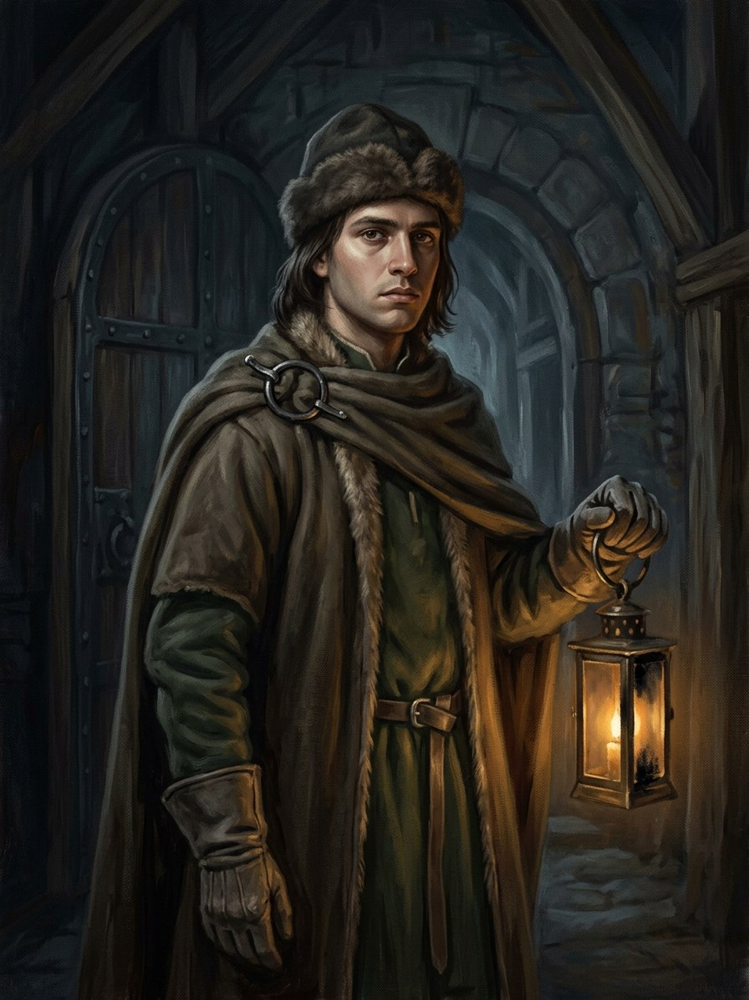

Zacharijas (Elijas’s younger son)¶
Relations
Child of: Elijas, son of Mošė (Karaim guard captain)
Sibling: Samuelis (Elijas’s elder son, Karaim)
Took part in: Vytautas dies at Trakai; the Last Flame goes out — At the vault door in 1430.
Zacharijas (Elijas’s younger son, Karaim)

Zacharijas (Elijas’s younger son, Karaim) · character¶
Type |
character |
Years |
?–? |
Status |
The saga’s invention |
Note |
Holds the Trakai vault door in 1430 and tends the old brass lantern after the flame goes out (Book V ch. 4); wife Sara. |
Summary¶
Zacharijas is the younger son of Elijas, the Karaim captain of the Trakai guards. After the Last Flame goes out in 1430 he is the guard who notices the hearth in the guard-house die, and he keeps his father’s old brass lantern alight day and night, as a soldier holds a bridge. His wife is Sara; his elder brother is Samuelis.
Record vs saga¶
[Historical record]: The Karaims at Trakai were settled by Vytautas (tradition: 1397 or about 1400, from Crimea).
[The saga’s invention]: Zacharijas himself, his wife, and the guard-house cold.
Appearances¶
Book V: ch. 4 (Užgesusios Krosnys). His father holds the vault door in Book II ch. 18, 29; the “younger son” holds it in 1430 (Book IV ch. 25-30).
Timeline¶
Year |
Event |
Book |
|---|---|---|
1430-10-27 |
IV · Nematoma Karūna |
Connections¶
graph LR
elijas["Elijas, son of Mošė (Karaim guard captain)"]
ev_vytautas_dies["Vytautas dies at Trakai; the Last Flame goes out"]
samuelis["Samuelis (Elijas's elder son, Karaim)"]
zacharijas["Zacharijas (Elijas's younger son, Karaim)"]
zacharijas -->|Took part in| ev_vytautas_dies
elijas -->|Parent of| zacharijas
samuelis -->|Sibling| zacharijas
style zacharijas stroke-width:3px